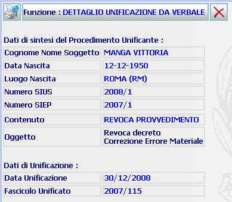

DETTAGLIO UNIFICAZIONE DA VERBALE: La funzione consente di visualizzare il dettaglio dell'unificazione da verbale, comprensivo di tutte le indicazioni inserite attraverso la maschera precedente
LE MASCHERE VIDEO
La funzione viene realizzata attraverso la maschera seguente in cui compare il dettaglio dell'avvenuta unificazione, comprensivo di tutte le indicazioni inserite attraverso la maschera precedente.

COME FARE PER ...
| Per
cancellare l'atto prodotto
l'utente deve
cliccare sul pulsante
|
PULSANTI
Sono presenti i pulsanti
 e
e
 , facenti parte del gruppo di
pulsanti di "Uso Comune"
, facenti parte del gruppo di
pulsanti di "Uso Comune"